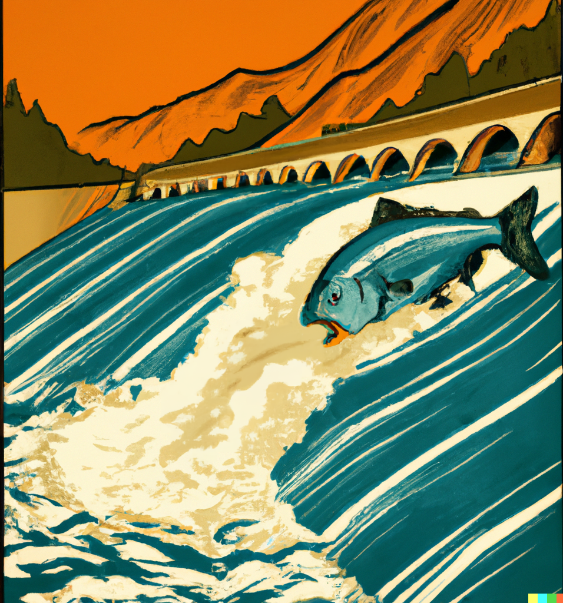

🐟 Four Peaks: My Experience as a Professional Fish Counter

This page is a link to my essay about fish counting and digital transformation in large-scale organizations. I am happy to talk about my experience either writing the essay for publication or any details in the essay itself.